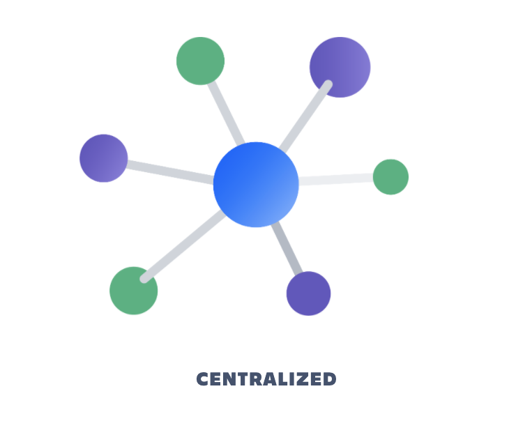
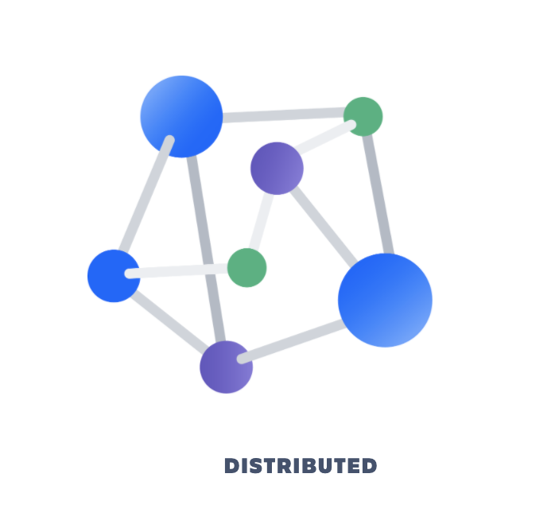

Version Control Management (Distributed Approach)
- Skill Classification: Software Configuration Management
- Related Software Engineering Area(s) : Software Maintenance, Software Development
- Overview :
In this article, we are going to look at the basic idea of a Version Control System, its need, and the pivotal role it plays in the field of Software Engineering Processes and Version Control Management best practices. Version control systems are a category of software tools that help a software team manage changes to source code over time. Version control software keeps track of every modification to the code in a special kind of database. If a mistake is made, developers can turn back the clock and compare earlier versions of the code to help fix the mistake while minimizing disruption to all team members.
Source code is a precious asset whose value must be protected. It is a repository of invaluable knowledge and understanding about the problem domain that the developers have collected and refined over the period of years/decades. Version Control anticipates on protecting this precious information from both catastrophic events and casual degradation of human errors. Version Control manages changes to documents, computer programs, large websites, and other collections of information. Each revision is associated with a time-stamp and the person making the change. Revisions can be compared, restored, and with some types of files, merged.
Even though it is most often used for source code, in reality, there are many other entities within an information solution to which version control can and where practical be applied. This is especially true if those entities are stored within text-based files or if they can be exported to and imported from text-based files (e.g., configuration settings stored in a database). These additional entities include but are not necessarily limited to the following:
- configuration settings (.conf, .cfg, .ini, etc.)
- templates (e.g., web page layouts, forms, etc.)
- rules (e.g., access, permissions, processing, filtering, scheduling, etc.)
- shared inclusions (e.g., headers, footers, menus, etc.)
- documentation (e.g., technical specs, user guides, operations guides, etc.)
- web sites
Background
It is extremely rare if not impossible for a developer to work on a single file, in isolation, without sharing it with the outside world. Version Control (also known as revision control, source control, or source code management) provides a logical way to organize and control changes to various versions of files.
Brief History
The first Version Control Systems were introduced in 1972 by Bell Labs. The first one was available only for UNIX and only worked with Source Code files. It only worked on the development system and was not made for sharing code, as it only worked for a single user. In 2000, a new product called Subversion was created and supported non-text files, tracking directory structure changes, such as file renames and moves, and its transaction unit was the directory as opposed to an individual file. So you could check in an entire directory tree and check it out. In 2004, Microsoft created the Team Foundation Server to replace its aging Visual SourceSafe Version Control System, which was primarily a client server system. The next generation of source code control software is called Distributed Source Code Control. Distributed Source Code Control is different in that there's not a central server that everybody shares. Everybody shares their own individual repository and then can share their changes with a central server or share their changes with individual users.
Centralized Vs Distributed Version Control

Centralized Version Control Systems (such as CVS,
Subversion, and Perforce) have a single server that contains all
the versioned files, and a number of clients that check out files
from that central place. For many years, this has been the
standard for version control. This setup offers many advantages,
especially over local VCSs. For example, everyone knows to a
certain degree what everyone else on the project is doing.
Administrators have fine-grained control over who can do what,
and it’s far easier to administer a CVCS than it is to deal with
local databases on every client. However, this setup also has
some serious downsides. The most obvious is the single point of
failure that the centralized server represents. If that server
goes down for an hour, then during that hour nobody can
collaborate at all or save versioned changes to anything they’re
working on. If the hard disk the central database is on becomes
corrupted, and proper backups haven’t been kept, you lose
absolutely everything — the entire history of the project except
whatever single snapshots people happen to have on their local
machines. Local VCS systems suffer from this same problem —
whenever you have the entire history of the project in a single
place, you risk losing everything. Operations

Distributed Version Control Systems (DVCSs) steps in to take care of the above risk associated with the Centralized approach. In a DVCS (such as Git, Mercurial, Bazaar or Darcs), clients don’t just check out the latest snapshot of the files; rather, they fully mirror the repository, including its full history. Thus, if any server dies, and these systems were collaborating via that server, any of the client repositories can be copied back up to the server to restore it. Every clone is really a full backup of all the data. Furthermore, many of these systems deal pretty well with having several remote repositories they can work with, so you can collaborate with different groups of people in different ways simultaneously within the same project. This allows you to set up several types of workflows that aren’t possible in centralized systems, such as hierarchical models.
Concepts in Distributed Version Control
Figure 3.0: Operations in Git system
Cloning
This concept refers to the process of copying a version of the software from the remote repository into one's local repository
Snapshotting
This deals with any sort of modification of the files present in the local repository
Branching
Branching is what happens when you want to work on multiple features at the same time. You wouldn’t want to end up with a master branch which has Feature 1 half done and Feature 2 half done. Furthermore, we would separate the code base into “snapshots” (branches) and work on and commit to them separately. As soon as we are ready, we might merge this branch back into the master branch and push it to the remote server.
Branching
Branching is what happens when you want to work on multiple features at the same time. You wouldn’t want to end up with a master branch which has Feature 1 half done and Feature 2 half done. Furthermore, we would separate the code base into “snapshots” (branches) and work on and commit to them separately. As soon as we are ready, we might merge this branch back into the master branch and push it to the remote server.
Merging
While working on feature version of the application, when there is a need of including the code from other features, a merging operation can be performed on one or more branches. While performing merging, care needs to be taken to look out for conflicng code and resolving it so preserve the important code
Inspection
As the name suggests, this process helps the developers or managers keep an eye on the source code by being able to view history of a particular file, compare a file with its previous version, etc.

![GitHub - clarive/cla-mercurial-plugin: Mercurial SCM integration]()